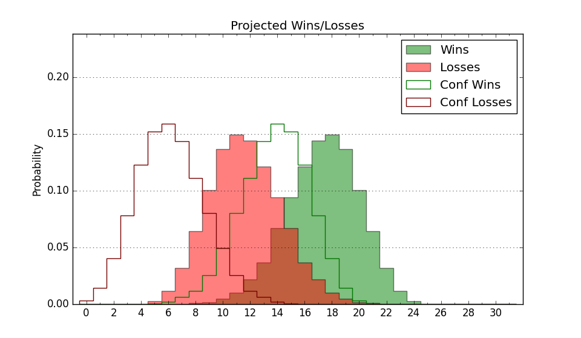

| Home | Game Probabilities | Conferences | Preseason Predictions | Odds Charts | NCAA Tournament |
| City: | Dayton, Ohio | |
| Conference: | Horizon (1st)
| |
| Record: | 1-0 (Conf) 3-5 (Overall) | |
| Ratings: | Comp.: 2.6 (141st) Net: 4.3 (132nd) Off: 113.8 (44th) Def: 109.5 (281st) SoR: 0.2 (220th) |
| Remaining | ||||||
|---|---|---|---|---|---|---|
| Date | Opponent | Win Prob | Pred. | |||
| 12/12 | Western Kentucky (167) | 71.9% | W 82-75 | |||
| 12/19 | Miami OH (259) | 84.6% | W 85-73 | |||
| 12/29 | @ Green Bay (278) | 65.3% | W 74-69 | |||
| 12/31 | @ Milwaukee (311) | 73.1% | W 86-78 | |||
| 1/4 | Cleveland St. (206) | 76.6% | W 82-73 | |||
| 1/6 | @ Fort Wayne (151) | 37.8% | L 80-84 | |||
| 1/10 | @ Robert Morris (290) | 68.3% | W 78-73 | |||
| 1/12 | @ Youngstown St. (175) | 44.7% | L 79-81 | |||
| 1/18 | Green Bay (278) | 86.5% | W 78-65 | |||
| 1/20 | Milwaukee (311) | 90.2% | W 90-74 | |||
| 1/25 | @ Cleveland St. (206) | 49.0% | L 77-78 | |||
| 1/28 | @ IUPUI (358) | 88.6% | W 84-69 | |||
| 2/1 | Youngstown St. (175) | 73.3% | W 84-76 | |||
| 2/4 | @ Northern Kentucky (197) | 48.0% | L 75-76 | |||
| 2/8 | Detroit (326) | 91.7% | W 86-69 | |||
| 2/10 | Oakland (138) | 63.5% | W 81-77 | |||
| 2/17 | Robert Morris (290) | 88.0% | W 83-68 | |||
| 2/22 | @ Detroit (326) | 76.4% | W 82-74 | |||
| 2/25 | @ Oakland (138) | 33.8% | L 77-82 | |||
| 2/28 | Fort Wayne (151) | 67.4% | W 84-79 | |||
| 3/2 | Northern Kentucky (197) | 75.9% | W 79-71 | |||
| Previous | Game Score | |||||
| Date | Opponent | Win Prob | Result | Off | Def | Net |
| 11/10 | @Colorado St. (20) | 7.3% | L 77-105 | 0.7 | -10.7 | -10.0 |
| 11/14 | Toledo (127) | 61.9% | L 77-78 | -1.9 | -3.9 | -5.8 |
| 11/16 | @Indiana (89) | 24.2% | L 80-89 | 4.8 | -2.8 | 2.0 |
| 11/20 | (N) Louisiana Lafayette (223) | 65.5% | W 91-85 | 5.6 | -8.3 | -2.7 |
| 11/21 | (N) Hofstra (81) | 35.1% | L 76-85 | 2.2 | -7.6 | -5.4 |
| 11/22 | (N) Illinois St. (202) | 63.3% | W 74-49 | -3.6 | 30.9 | 27.3 |
| 11/29 | IUPUI (358) | 96.4% | W 103-74 | 18.2 | -10.1 | 8.1 |
| 12/2 | @Davidson (137) | 33.7% | L 73-82 | 0.2 | -8.0 | -7.7 |
| Stats & Trends | |||||
|---|---|---|---|---|---|
| Current | Day | Week | Month | Season | |
| Composite | 2.6 | +0.0 | +0.9 | +3.0 | +3.0 |
| Comp Rank | 141 | -- | +1 | +27 | +27 |
| Net Efficiency | 4.3 | +0.0 | +0.4 | -- | -- |
| Net Rank | 132 | -- | -- | -- | -- |
| Off Efficiency | 113.8 | +0.0 | -0.4 | -- | -- |
| Off Rank | 44 | +1 | +3 | -- | -- |
| Def Efficiency | 109.5 | -0.0 | +0.8 | -- | -- |
| Def Rank | 281 | -- | +1 | -- | -- |
| SoS Rank | 104 | -- | -32 | -- | -- |
| Exp. Wins | 17.3 | +0.0 | -0.5 | -0.4 | -0.4 |
| Exp. Conf Wins | 13.8 | +0.0 | -0.1 | +0.3 | +0.3 |
| Conf Champ Prob | 30.4 | +0.1 | -2.7 | -2.8 | -2.8 |

| Advanced Stats | ||
|---|---|---|
| Stat | Value | Rank |
| Off Eff FG % | 0.558 | 38 |
| Off Ast Ratio | 0.130 | 225 |
| Off ORB% | 0.291 | 140 |
| Off TO Rate | 0.143 | 140 |
| Off FT Ratio | 0.323 | 210 |
| Def Eff FG % | 0.533 | 281 |
| Def Ast Ratio | 0.155 | 279 |
| Def ORB% | 0.259 | 134 |
| Def TO Rate | 0.131 | 280 |
| Def FT Ratio | 0.328 | 167 |